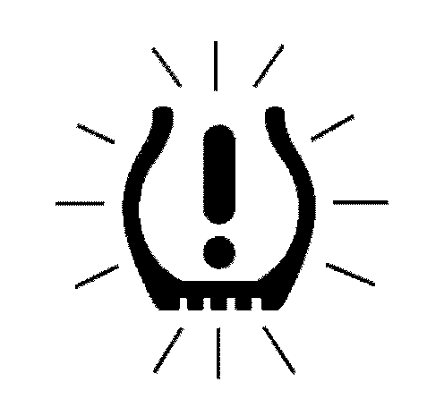
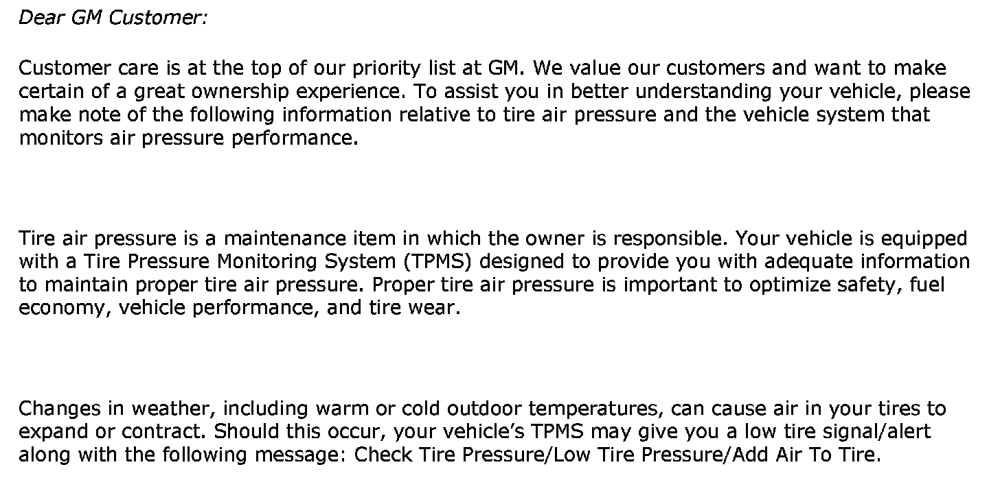
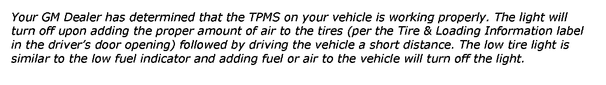
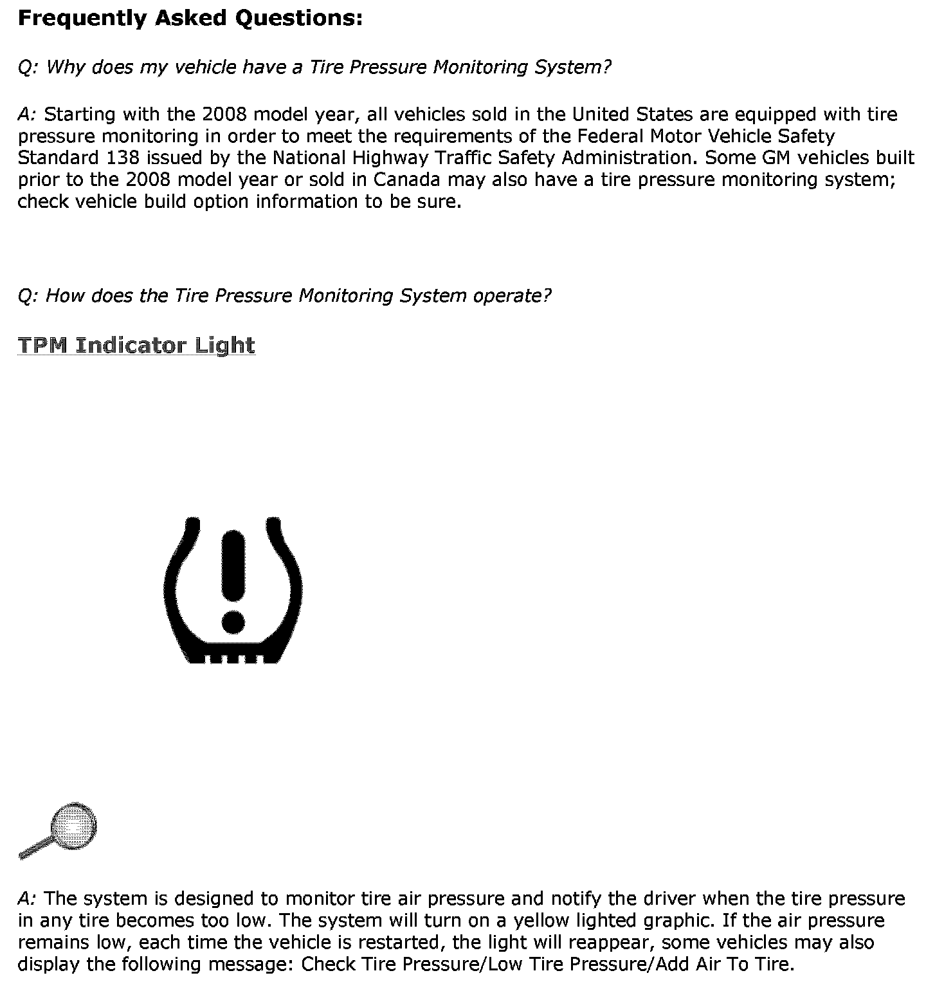
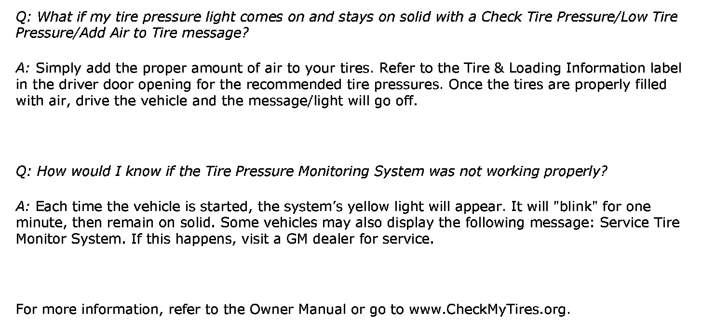

Tire Pressure Monitor - TPM System Message/Service Tips
# 09-03-16-002A: Dealership Service Consultant Procedure as Vehicle Comes into Service Drive for Tire Pressure Monitor (TPM) System Message, Light and Customer Information - (Apr 27, 2010)Subject:
Dealership Service Consultant Procedure as Vehicle Comes into Service Drive for Tire Pressure Monitor (TPM) System Message, Light and Customer Information
Models:
2006-2011 Cars and Light Duty Trucks (Including Saturn and Saab)
2006-2010 HUMMER H2, H3
ATTENTION
The information found in this bulletin is to be used as a dealership service consultant procedures for customers coming into the service lane with an illuminated "low tire light" or comments on a check tire pressure/low tire pressure/add air to tire or service tire monitor system message. Maintaining proper tire pressures is an Owner's Maintenance item and is not covered under warranty.
This bulletin is being revised to add model years and update additional bulletin reference information. Please discard Corporate Bulletin Number 09-03-16-002 (Section 03 -- Suspension).
Customer Concerns and Confusion with the Tire Pressure Monitoring (TPM) System
The following procedure should be used by dealership service consultants when a customer comes into the service drive with a "low tire light" on or comments on a check tire pressure/low tire pressure/add air to tire or service tire monitor system message. The service consultant should perform the following steps:
Procedure
Turn the key to ON, without starting the engine.
^ If the low tire light comes on and stays on solid with a check tire pressure/low tire pressure/add air to tire message (on vehicles equipped with DIC), advise the customer:
- The system is working properly.
- Properly adjusting all tire air pressures to the recommended levels and driving the vehicle will turn the light off (refer to the Tire and Loading Information label on the driver side door).
- More detailed information can be found in the Owner Manual.
- Service is not covered under warranty - this maintenance is the responsibility of the owner.
- Give the customer a copy of the "GM Customer TPMS Information".
^ If the Tire Pressure Monitor (TPM) light blinks for one minute then stays on solid with a service tire monitor system message (on vehicles equipped with DIC):
- A TPM system problem exists. The vehicle should be written up accordingly and sent to your service department for further DTC diagnosis and service.
- If dashes (--) are displayed in only one or two of the tire pressure readouts, it is likely caused by a previous TPM system relearn that was performed incorrectly due to interference from another vehicle's TPM system during the relearn process (refer to the Important statement later in this bulletin regarding TPM relearn with a Tech 2(R)).
- If dashes (--) are displayed in all four of the tire pressure readouts, there is a system problem. Follow the appropriate SI service procedures.
^ If a customer indicates the low tire light comes on for a few minutes when the vehicle is started, then goes off after driving a while, advise the customer:
- The system is working properly.
- Most likely, air pressure in one or more of the tires is low enough to turn the light on when tires are cold. After driving for a while, tires will heat up, allowing tire air pressure to increase above the threshold causing the light to go off. Properly adjusting all tire air pressures to the recommended levels will correct this (Refer to the Tire and Loading Information Label on the driver side door).
- More detailed information can be found in the Owner Manual.
- Service is not covered under warranty - this maintenance is the responsibility of the owner.
- Give the customer a copy of the "GM Customer TPMS Information".
For more detailed information, refer to Corporate Bulletin Number 07-03-16-004C and TPMS Training Course 13044.12T2.
Tire Pressure Light
At key on, without starting the vehicle:
Steady Solid Glowing TPM Indicator

If the TPM indicator appears as a steady glowing yellow lamp (as above), the system is functioning properly and you should add air to the tires to correct this condition.
Blinking TPM Indicator

If the TPM indicator appears as a BLINKING yellow lamp for one minute and then stays on solid, diagnostic service is needed.
The Effect of Outside Temperature on Tire Pressures
Important:
As a rule of thumb, tire pressure will change about 7kPa (1 psi) for every 6°C (10°F) decrease in temperature - Tire pressure will drop when it gets colder outside, and rise when it gets warmer.
Under certain situations such as extreme outside temperature changes, the system may bring on a solid light with a check tire pressure message. This should be considered normal and the system is working properly. The light will turn off upon adding the proper amount of air to the tires (refer to the Tire & Loading Information label in the driver's door opening). When properly adjusting tire air pressure, the following steps are important to help optimize the system and prolong bringing a tire pressure light on:
^ Use an accurate, high quality tire pressure gauge.
^ Never set the tire pressure below the specified placard value regardless of tire temperature or ambient temperature.
^ Tire pressure should be set to the specified placard pressure at the lowest seasonal temperature the vehicle will encounter during operation.
^ When adding proper tire air pressure, it is important to remember fluctuations in outside air temperatures and tire temperatures effect tire air pressures.
^ After you have added the proper tire pressure, if the vehicle has a DIC (after the system has updated), check to see if DIC displays are the same readings as the tire pressure gauge used (adjust as necessary).
^ Only perform a TPM sensor re-learn after a tire rotation or system part replacements and use the Tech 2(R) to initiate the relearn whenever possible to avoid invalid sensor I.D. learns.
Important:
Always take outside temperature and tire temperature into consideration to properly set tire pressures. Foe example, on colder days (20°F/-7°C), if setting tire pressure when the vehicle has been indoors (60°F/16°C) or the tires are warm from being driven, it will be necessary to compensate for the low outside temperature by adding 21-27 kPa (3-4 psi) more then the placecard pressure. At some later time, when the vehicle has been parked outside for a while, the tires will cool off and the pressures will drop back into the placecard range.
Important:
Recently, nitrogen gas (for use in inflating tires) has become available to the general customer through some retailers. The use of nitrogen gas to inflate tires is a technology used in automobile racing. Tires inflated with nitrogen gas may exhibit less of a pressure change in response to outside temperature changes. Nitrogen gas inflation is compatible with GM TPM sensors. For additional information, refer to Corporate Service Bulletin 05-03-10-020C.
Important:
All Models (Except the Pontiac Vibe): Do not perform a TPM relearn at PDI, the system has already been set at the Assembly Plant. Do not perform a TPM relearn after adding air to the tires. The low tire light is similar to the low fuel indicator and adding something (fuel, air) to the vehicle makes that light turn back off again. Note that because of system behavior, some vehicles must be driven a short distance before the sensors recognize the increase in pressure and turns the light off again.
Pontiac Vibe Only: Do not use the TPMS reset button to turn off the light. The system will update and light will turn off when all tire pressures have been adjusted followed by short distance drive.
Important:
All models (except the Pontiac Vibe): Each tire monitor sensor is learned to a specific vehicle corner. When performing a TPM relearn (only after a tire rotation or replacement of a TPM sensor or Module), always use the Tech2(R) to initiate the J 46079 relearned process. Tech 2(R) - initiated relearns lock out other vehicle TPM signals that may be broadcasting in the area. Only signals initiated by the J 46079 tool will be accepted. This method avoids storing false TPM I.D.s and will prevent customers from returning with dashes (--) displayed in tire pressure readouts and/or a flashing tire pressure monitor (TPM) light. Checking the four TPM I.D.s with the Tech 2(R) prior to and following relearn to verify they are the same can prevent invalid I.D. learns.
Pontiac Vibe Only: Tire Monitor Sensors are not learned to a specific vehicle corner. Do not perform a TPM Reset after tire rotation. The TPMS Reset button must only be used during pre-delivery inspection by the dealer to initialize the system (after all tire pressures have been adjusted properly) or when a Tire Pressure Monitor System component is replaced. The J 46079 tool does not work on Vibe TPM sensors. A TPMS relearn on Vibe must be preformed with a Tech 2(R) to set the TPMS Module in learn mode. The TPMS sensor IDs are entered through the Tech 2(R). Refer to SI for further Vibe TPMS information.
Labor Operation and Repair Order/Warranty System Claim Required Documentation
Important:
The ONLY time labor operation E0726 or E0722 should be used is to diagnose for a system issue. That should ONLY occur if, at key ON, without starting the engine, the Tire Pressure Monitor (TPM) blinks for one minute and then stays on solid with a Service Tire Monitor System message (on vehicles equipped with a DIC) If that occurs, a TPM system problem exists and the system will have set a DTC. If one of these operastions is used, the following Repair Order and Warranty System documentation are required:
^ Document the customer complaint on the Repair Order.
^ Document the TPMS DTC that has set on the Repair Order.
^ Enter the TPMS DTC in the Warranty System (WINS) in the Failure Code/DTC field on the claim submission (refer to the Claims Processing Manual, Section IV, Warranty claim Data, Page 6, Item G).
If the above information is not documented on the Repair Order and Warranty System, the claim may be rejected. If the Warranty Parts Center (WPC) generates a request, this repair order documentation must be sent back.


Customer TPMS Information


Frequently Asked Questions

Disclaimer